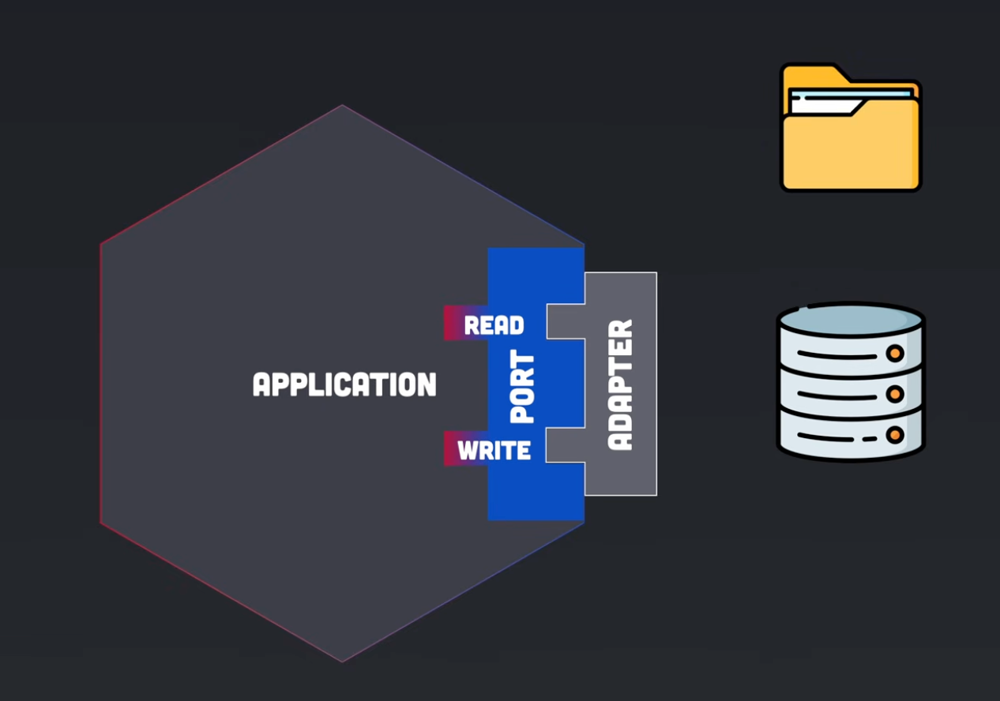

Companion to the design spec. Read the spec for the why (product, scope, decisions); this doc is the how — vocabulary first, then the high-level design (A–D: architecture, domain model, interface, code map), then the per-class detail (E–H: types & wiring, ask path, build engine, cross-cutting).
Source (e.g. METALOG_MOTUS3,
METALOG_METADATA). No separate Profiler type; a source's SourceKind
(METADATA vs PROFILE) says whether it reconciles or feeds counts.
(2) Profiler families — each PROFILE source belongs to a ProfilerFamily = sources sharing
both a feature namespace and an abundance estimator (STAT, METAPHLAN,
MOTUS). One biom = one family: the profile_sources you name (head first) union their
samples; the head wins overlapping samples. Each biom ships native values — STAT counts, MetaPhlAn relative abundance. STAT and MetaPhlAn are different
estimators, so they never share a biom (G.3).
(3) run(): profile_sources (one family, head first — their samples unioned) +
metadata_winning_source. No rank knob — bioms ship native granularity (G.3).
(4) Identity: NCBI BioSample is materialized at build as one key across all sources; Cohort exposes the
SRA-only / Metalog-only / shared partition.Architecture terms used below — all are industry-standard, language-agnostic names (the C#
world uses the same words). Only Protocol is Python-specific; it means "interface."
| Term | What it means here | C# you know |
|---|---|---|
| Domain core | The pure logic and nouns of the problem (Plan, Cohort, Source). No network, no disk, no DuckDB/Gemini imports. | your POCO domain model |
| Facade | The tiny public surface Noam calls — ask, config, load_plan. Holds no logic. | a thin static API class |
| Port | An interface the core defines for something it needs from outside (LLM over the network, DB on disk). The core depends on the interface, never the concrete. | interface ILlmBackend |
| Protocol | Python's way to write that interface. Structural / duck-typed: any class with the right method satisfies it — no implements keyword. (The one Python-specific term.) | an interface you don't declare you implement |
| Adapter | The concrete class that fulfills a port: GeminiBackend, DuckDbConnection. | class GeminiBackend : ILlmBackend |
| Driving adapter (primary / inbound) | An adapter on the other side: instead of the core calling out to it, it calls in. Ours is the askslm terminal app — it drives the facade the way a user would. Swappable for the same reason the DB is: a web UI later would be a second driving adapter, changing nothing beneath it. | your Controller — HTTP comes in, calls the service |
| Composition Root ( Runtime) | The one place that constructs the real objects and connects them, so nothing else knows concretes. (Term coined in a .NET DI book — it is the C# word.) | Program.cs / Startup.cs / DI registration |
| DTO / value object | A small immutable data holder with a domain name (Translation, CohortPreview). Frozen dataclass. | a record |
| Source (+ SourceKind) | One DuckDB table = one source (METALOG_MOTUS3, SRA_METADATA). Its kind is METADATA (reconcilable) or PROFILE (feeds counts). | a typed enum keyed to a table |
| ProfilerFamily | A group of PROFILE sources sharing both a feature namespace and an abundance estimator, so their values are comparable: STAT (NCBI tax_id, read-count), METAPHLAN (NCBI clade, coverage), MOTUS (mOTU IDs, coverage). One biom unions the same-family sources you name (head first); the family is the poolable set, and marks STAT/MetaPhlAn as un-poolable. | a closed enum of comparable profilers |
| Accession | The sample's key. The canonical one is the NCBI BioSample (SAMN…), materialized onto every table at build (B.3) so it is one primary key across all sources. (Other public ids exist — ENA sample ERS…, run ERR…; the build resolves them down to the biosample. Metalog's internal sample_alias is the fallback key for samples with no BioSample.) | a natural key / external Id |
| CohortPreviewBuilder → CohortPreview | Before pulling gigabytes, run cheap COUNTs to build the show-your-work: per-source partition + per profile-source coverage. | read-only queries for a summary card |
A small layered / hexagonal package. The domain core knows nothing about DuckDB,
Gemini, or the filesystem; those are adapters behind ports. The
composition root (Runtime) connects concretes to ports. The functions
(config, ask, load_plan) are a thin facade — no logic.
Noam does not call that facade himself. The user surface is an interactive terminal app
(askslm) — a driving adapter that sits outside the facade and calls it on his
behalf (section C.0). It holds no domain logic: it reads a question, renders the Plan, collects the
source choices with arrow keys, and calls run(). The facade remains a real, supported Python API — the
terminal app is simply its first and only client.
Domain depends on nothing. Services depend on domain + ports. Adapters implement ports. This seam lets every service be unit-tested against fakes, and lets the LLM provider, the database engine, or a whole new source be swapped/added without touching the core.
| Layer | Members | Knows about |
|---|---|---|
| Driving adapter (user surface) | askslm terminal app — session, prompts, render | the facade only; no domain logic |
| Facade | config(), ask(), load_plan(), re-exported Source | composition root only |
| Composition root | Settings, Runtime | every concrete; connects ports |
| Application services | AskService, CohortPreviewBuilder, CohortBuilder | domain + ports |
| Domain core | Plan, Translation, ResearchQuestion, Cohort, Materialization, ProfileMatrix, ReconciledMetadata, CohortPreview, Source, SourceKind, ProfilerFamily, Rank, StatProfile | nothing |
| Ports (Protocols) | LlmBackend, Database | domain types only |
| Adapters | GeminiBackend, DuckDbConnection, PlanRepository, BiomFactory, readers | third-party libs |

Database port.Database adapter queries a prebuilt DuckDB over SQL — it never reads raw
files. This is a deliberate decision, not an accident of the v1 implementation. The Metalog/SRA files
(gzipped TSVs, parquet) are parsed once into a columnar askslm_mirror.duckdb by a
separate ETL; the package only ever opens that mirror read-only and runs the LLM's SQL against it. The rejected
alternative — read_csv over the raw files at query time — re-parses multi-GB gzip on every call and was
ruled out for speed. Build-time reads files; run-time queries DuckDB. Rationale and the A/B/C
trade-off: Docs/superpowers/plans/2026-06-18-metalog-duckdb-build.md.One source = one DuckDB table. A database (SRA, Metalog) contributes several. Every source has a kind that decides how multiples of it combine:
| Kind | Sources | Role in the biom | How multiples combine |
|---|---|---|---|
METADATA | SRA_METADATA, METALOG_METADATA | describe the samples (sample axis) | reconciled per field by precedence (B.4) |
PROFILE | SRA_TAXONOMY, METALOG_METAPHLAN4_ALL, METALOG_MOTUS3, METALOG_SPIRE_MOTUS | feed the counts (feature axis) | union within one family, per sample (whole-column), head wins overlap (B.4, G.3) |
A profile is comparable to another only when two things match — what its features are and what its values mean:
A PROFILE source carries a ProfilerFamily — sources that share
both axes, so their values are comparable and can be pooled. A biom unions the same-family sources you
name (profile_sources, head first); cross-family sources can never combine:
| ProfilerFamily | Namespace | Estimator | Member sources |
|---|---|---|---|
STAT | NCBI tax_id | read-count (sequence abundance) | SRA_TAXONOMY (single source) |
METAPHLAN | NCBI clade | coverage (cell abundance) | METALOG_METAPHLAN4_ALL (single source; all taxonomic levels) |
MOTUS | mOTU ID | coverage (cell abundance) | METALOG_MOTUS3 · METALOG_SPIRE_MOTUS — share mOTU IDs natively |
profile_sources Noam names (head first) union their
samples into one matrix; the head derives the family, wins any overlapping sample, and supplies lineage.
STAT and METAPHLAN are a single Metalog source each; the two mOTUs sources genuinely union (SPIRE adds samples mOTUs3
lacks), and a new same-family source grows the cohort further (G.3). Cross-family mixing is rejected (Materialization guard):
STAT and METAPHLAN share a namespace but not an estimator (numbers not comparable — G.3);
METAPHLAN and MOTUS share an estimator but not a namespace. Each biom ships its source's
native granularity — there is no run() rank knob; Noam projects to a rank himself (G.3).The canonical key is the NCBI BioSample (SAMN…) — the biom's columns are
biosamples. The two-hop bridge (Metalog profiles use a study-internal name, not an external accession) is
resolved once, at build time, so every table in the mirror already carries a biosample
column. The package then sees one primary key across all sources — run-time never re-derives it:
| When | What happens |
|---|---|
| Build (ETL, once) | resolve profile.sample_alias → metalog_metadata.sample_alias, then spire_sample_name == sra_metadata.biosample; stamp the resolved biosample onto every Metalog table and index it. The two-hop lives here and nowhere else. |
| Run (per query) | every source — SRA and Metalog — already exposes biosample; joins are single-key. No AccessionNormalizer, no per-query bridge. |
One key, with one honest exception. Because Metalog keeps its own ids (an external accession isn't always 1:1 with
a sample) and spire_sample_name is mixed-type, some Metalog samples resolve to no
biosample:
| Identifier | Role | Null? |
|---|---|---|
sample_alias | Metalog's internal PK — always present, unambiguous | never |
biosample | the cross-source join key (resolved at build, indexed everywhere) | NULL for the Metalog-only tail with no external BioSample |
biosample when present;
for the null tail (Metalog-only, no BioSample — nothing to join to anyway) it falls back to
sample_alias. So "one key across all sources" holds for everything that can be shared, without
inventing biosamples for orphans.Discovery runs each source's query — every row already carries its biosample (stamped at build, B.3) —
and partitions the cohort by where each biosample appears. That partition is what plan
shows and what run() resolves:
| Partition | Biosample appears in | Metadata comes from | Counts come from |
|---|---|---|---|
| SRA-only | SRA query only | SRA | a named SRA-side source (only STAT), if listed |
| Metalog-only | Metalog query only | Metalog | a named Metalog source, if listed |
| shared | both | metadata_winning_source decides | the named profile_sources — head wins overlap |
profile_sources
(head wins overlap), at each source's native granularity — samples no named source covers are dropped.Noam never writes Python. He runs one command and answers questions:
$ askslm
? What cohort do you need? fecal metagenomes from adults with IBD, Western countries
… 847 samples · 3 studies · MetaPhlAn 62% · mOTUs 91%
? What now? (↑/↓)
› Run it
Refine the question
Choose profile sources
Save plan and quitThis replaces the earlier Jupyter-notebook surface. The reason: in the notebook story the user
still had to type a line of Python, so "no programming required" was not literally true — the single most-asked
question when this design was presented. A terminal session makes it true while keeping the stateful
ask → inspect → refine loop that a one-shot CLI cannot provide (each invocation would lose the Plan).
| What the user does | What the app calls |
|---|---|
runs askslm | config() — see C.0.3, the app must source its arguments |
| types a question | ask(question, save=...) → Plan |
| reads the cohort preview | PlanView rendered as a rich table (C.1.2 is the same content) |
| refines | ask() again — previous questions kept in history |
| picks profile sources | a checkbox over one ProfilerFamily, head first |
| confirms | plan.run(profile_sources=..., metadata_winning_source=..., out=...) |
flowchart TD
START([askslm]) --> Q[/"prompt: research question"/]
Q --> ASK["ask() · one LLM hop + COUNTs"]
ASK --> VIEW["render PlanView<br>studies · samples · per-family coverage"]
VIEW --> MENU{"select · arrow keys"}
MENU -->|refine| Q
MENU -->|choose sources| PICK["checkbox · one family, head first<br>invalid combos never shown"]
PICK --> VIEW
MENU -->|save and quit| SAVE[("plan.json")]
MENU -->|run| RUN["plan.run()"]
RUN --> BIOM[("feature_table.biom")]
BIOM --> DONE([done · analysis is out of scope])
style DONE fill:#eef2f6,stroke:#c7d0da
run() is cheap and repeatable, and the one expensive
step is reached only by explicit confirmation.questionary (arrow-key select / checkbox / confirm / text with
history — prompt_toolkit underneath) and rich (the plan table). Two dependencies, roughly
one hundred lines of glue.
Explicitly not textual. The reference point people reach for is Claude Code, which is a
full-screen TUI: it owns the terminal, redraws, and maintains its own layout engine. That is weeks of work
and a permanent maintenance surface. What this design needs — show a table, arrow between options, confirm, repeat —
is a line-oriented prompt flow that scrolls like normal terminal output. It feels the same to the
user in the ways that matter and costs a small fraction of the effort. Revisit full-screen only if a persistent
side panel or live progress across a long download is ever genuinely required. Neither is v1.
The session ends when the .biom is written. Downstream analysis and plotting are out of
scope — the notebook surface was quietly covering "and then he analyzes it", and dropping it makes that
boundary explicit rather than accidental. This is the correct scope for a read-only package whose job is
producing a valid cross-study cohort. The answer to "then what?" is: open the biom in whatever you already
use.
Dropping the notebook creates a gap this design did not previously have. config(db, llm,
llm_key) takes explicit arguments (E.4) — in the notebook story Noam typed them. A user who writes no Python
cannot, so the terminal app must source them itself. That mechanism does not exist yet.
Proposed, smallest thing that works: on first run, prompt for the database path and
LLM key, write them to ~/.askslm/config.toml, and read that file on every later start
(environment variables override it, so CI and the lab server need no file). Subsequent runs prompt for nothing.
Two verbs. ask() understands the question and previews the cohort — no source choices,
no biom presupposed. run() materializes a biom and is the only place the sources are named — the
profile_sources to union (all one family, head first) and which METADATA source wins ties.
There is no rank knob — bioms ship native granularity (C.1.4).
# configure once
askslm.config(db="/mnt/lab/metalog_sra.duckdb", llm="gemini", llm_key=os.environ["..."])
# understand + preview (one LLM hop + cheap COUNTs). Persists the plan to disk.
plan = askslm.ask("fecal metagenomes from adults with IBD, Western countries", save="plans/ibd.json")
print(plan) # the show-your-work below; stats-only users stop here
# one MetaPhlAn source today — a bare Source is fine (normalized to a one-element list):
table = plan.run(profile_sources=askslm.Source.METALOG_METAPHLAN4_ALL,
metadata_winning_source=askslm.Source.METALOG_METADATA, # default
out="cohort.biom") # prints the overview below, returns a biom.Table
# union same-family sources into one biom — head first, head wins overlapping samples:
plan.run(profile_sources=[askslm.Source.METALOG_METAPHLAN4_ALL, # head: family + lineage + tie-break
askslm.Source.SOMENEW_METAPHLAN], # adds the samples Metalog lacks
out="cohort_metaphlan_union.biom")
# reproduce later — same cohort, a different family, no LLM call:
askslm.load_plan("plans/ibd.json").run(profile_sources=askslm.Source.METALOG_MOTUS3, out="cohort_motus.biom")
# same cohort, STAT family — ships self_count at every rank; project to a rank yourself with StatProfile:
stat = askslm.load_plan("plans/ibd.json").run(profile_sources=askslm.Source.SRA_TAXONOMY, out="cohort_stat.biom")
askslm.StatProfile(stat).relative_abundance(rank=askslm.Rank.GENUS) # per-rank RA + Unclassified bucket (G.3.4)
plan renderThe headline most queries need: what was understood, how big the cohort is, and — per family — what each profile
source covers and how many samples it adds that no other same-family source has (its unique
contribution). That +unique column is the whole point: it tells Noam when listing several same-family
sources grows the biom (and when it adds nothing). Families are never pooled.
Plan · "fecal metagenomes from adults with IBD, Western countries"
Understood as
body_site = stool / feces
host_age = adult (≥ 18)
disease = IBD (Crohn's or ulcerative colitis)
country ∈ Western Europe ∪ North America ∪ Oceania
Cohort 412 biosamples (joined on SAMN biosample accession)
Build options one biom per family · list same-family sources to union them (head first)
STAT
SRA_TAXONOMY 380
→ biom 380 (one source in this family)
METAPHLAN
METALOG_METAPHLAN4_ALL 207 +0 unique
SOMENEW_METAPHLAN 54 +21 unique ← 21 cohort samples NO other source profiles
→ union all = 228 (207 + 21 new from SOMENEW)
MOTUS
METALOG_MOTUS3 207 +0 unique
METALOG_SPIRE_MOTUS 190 +15 unique ← 15 samples mOTUs3 lacks
→ union all = 222 (207 + 15 new from SPIRE)
+unique = cohort samples a source profiles that no same-family source does.
List the sources whose +unique you want (head first) to add those samples;
a +0 source is redundant — listing it changes nothing, so pick just one.
→ plan.run(profile_sources=[…], out=…) (or stop here for stats only)
e.g. [METALOG_METAPHLAN4_ALL, SOMENEW_METAPHLAN] → 228-sample MetaPhlAn biom
The same plan exposes the overlap and the exact SQL for when Noam needs to trust or debug it. In the
terminal app this is a "Show the SQL / overlap" menu entry rather than a second thing to remember — the
detail is one keystroke away but never in the headline.
Source overlap (same biosample in both databases)
SRA only 205 metadata + counts come from SRA
Metalog only 32 from Metalog
shared 175 ← metadata_winning_source decides these
Per-source coverage metadata: SRA_METADATA 380 · METALOG_METADATA 207
profile : SRA_TAXONOMY 380 · METAPHLAN4_ALL 207
SOMENEW_METAPHLAN 54 · MOTUS3 207 · SPIRE_MOTUS 190
SQL SRA → SELECT biosample, … FROM sra_metadata WHERE …
Metalog → SELECT spire_sample_name, … FROM metalog_metadata WHERE …
Materialization is not silent: run() returns a one-screen summary of what it actually built alongside
the biom.Table, so Noam sees the drops and the provenance without inspecting the file. Same rule as
C.1.2 — the value object is built here, the terminal app renders it, and it is the last thing the session prints
before exiting.
Built cohort_metaphlan_union.biom (biom JSON)
family METAPHLAN (coverage → relative abundance)
samples 228 (union of the named sources ∩ cohort)
features 1,432 clades (all levels)
counts METALOG_METAPHLAN4_ALL 207 (head) · SOMENEW_METAPHLAN +21 new · 0 overlap re-used
metadata METALOG_METADATA wins shared · SRA_METADATA fills gaps per field
dropped 184 biosamples → plan.dropped for the list (no source in this family)
profile_sources is one or more PROFILE sources of
one family (head first — it derives the family and wins overlaps); metadata_winning_source is a
METADATA source — both checked on construction (E.2). There is no rank knob; bioms ship native granularity. One
plan materializes many ways; adding a database, profiler, or family never moves ask()'s
signature.sequenceDiagram participant PR as Plan.run participant CB as CohortBuilder participant CD as CohortDiscovery participant PF as ProfileReconciler participant MR as MetadataReconciler participant BF as BiomFactory PR->>CB: build(plan, materialization, out) CB->>CD: discover(queries) CD-->>CB: Cohort with per-source sets, biosample keys ready CB->>PF: read(request, cohort.union) PF-->>CB: ProfileMatrix unioned over profile_sources, native granularity CB->>MR: reconciled(cohort, metadata_winning_source) MR-->>CB: ReconciledMetadata, winner fills from the other source CB->>BF: build(matrix, metadata) BF-->>CB: biom.Table CB-->>PR: biom.Table plus dropped-samples warning
One package per architectural concern — but a concern with a single tiny file does not earn its own folder.
Seven packages, not ten: config folds into the root, identity into cohort (it is the
cohort's key), the llm port+adapter into translation (its only consumer), and the lone
biom_factory next to the other adapter in db. The layer column still ties each
package back to the architecture rings (top of section A).
| Package | Layer | Holds | Why it exists |
|---|---|---|---|
askslm/ (root) | Facade + root | __init__.py · runtime.py · settings.py · errors.py | the only public surface (config · ask · load_plan), the one wiring point, and the validated Settings |
sources/ | Domain | source · source_kind · source_spec · profiler_family | the flat source model: one DuckDB table ↔ one Source |
translation/ | Domain + service + port/adapter | research_question · interpretation · source_query · translation · translation_prompt · translator · schema_catalog · backend (port) · gemini_backend (adapter) | question + every source's schema → one SQL per source, behind the provider-agnostic LLM seam |
plan/ | Domain + service + adapter | plan · plan_view · plan_repository · cohort_preview · cohort_preview_builder · materialization | the reviewable, persistable artifact and its show-your-work preview |
cohort/ | Domain + application service | accession · cohort · discovery · profile_reader · profile_reconciler · profile_matrix · metadata_reader · metadata_reconciler · reconciled_metadata · dropped · cohort_builder | the biosample key + SRA/Metalog/shared partition (pure set logic, no run-time normalizer) and the build engine: discover → reconcile → assemble |
db/ | Port + adapter | database (port) · duckdb_connection · biom_factory (adapters) | the read-only DuckDB seam and the existing biom build path |
cli/ | Driving adapter | session (the loop) · prompts (questionary wrappers) · render (rich views of PlanView) | the interactive terminal app (C.0) — the only thing the user touches. Calls the facade, owns no domain logic. Entry point askslm = askslm.cli.session:main |
sra_schema.py already splits SRAMetadataSchema / SRATaxonomySchema — the
same metadata/profile split as the source model. Feeds SchemaCatalog.BiomFactory; assembly rules unchanged.
classDiagram
class Source {
+spec() SourceSpec
+kind() SourceKind
}
class SourceSpec {
+database
+table
+kind
+family
+unit
+feature_meta
}
class SourceKind {
<<enumeration>>
METADATA
PROFILE
}
class ProfilerFamily {
<<enumeration>>
STAT
METAPHLAN
MOTUS
}
class Rank {
<<enumeration>>
SPECIES
GENUS
PHYLUM
}
class Materialization {
+profile_sources
+metadata_winning_source
+head() Source
+family() ProfilerFamily
}
class ProfileMatrix {
+counts
+lineage
+accessions()
}
class ReconciledMetadata {
+frame
+restricted_to()
}
class StatProfile {
+relative_abundance() Table
}
class Plan {
+run() Table
+save()
}
Source --> SourceSpec
SourceSpec --> SourceKind
SourceSpec --> ProfilerFamily
Materialization --> Source
Plan --> Materialization
StatProfile ..> Rank
Source is a flat enum; each member owns a SourceSpec. A Plan composes
its Translation and CohortPreview — it is the only object Noam holds. run()
bundles the chosen profile_sources (head first), the metadata winner, and the rank into a validated
Materialization, whose family() is derived from the head.AskService coordinates one LLM hop (Translator → LlmBackend) and the
cheap preview counts (CohortPreviewBuilder → Database), then persists through
PlanRepository. Both outside dependencies are reached only through Protocol ports.CohortBuilder orchestrates four collaborators. The two reconcilers mirror each other and each
folds several sources — metadata per field (MetadataReconciler), profiles
per sample over the named profile_sources (ProfileReconciler, head wins
overlap) — and each wraps a single-source reader. Every reader reaches DuckDB only through the Database
port.Accession = NewType("Accession", str) # canonical (biosample-level) id — the join key
class SourceKind(Enum):
METADATA = "metadata" # reconcilable across sources by precedence (per field)
PROFILE = "profile" # feeds counts; lives in a ProfilerFamily
class ProfilerFamily(Enum): # shared namespace AND estimator → values comparable
STAT = "stat" # NCBI tax_id · read-count (sequence abundance)
METAPHLAN = "metaphlan" # NCBI clade · coverage (cell abundance)
MOTUS = "motus" # mOTU IDs · coverage (cell abundance)
class Unit(Enum):
COUNTS = "counts" # normalized to RELATIVE on materialization
RELATIVE = "relative"
@dataclass(frozen=True)
class SourceSpec:
database: str # provenance: "sra" | "metalog"
table: str
kind: SourceKind
family: ProfilerFamily | None = None # set for PROFILE sources
unit: Unit | None = None # native unit of a PROFILE source
lineage_column: str | None = None # set for PROFILE sources
@dataclass(frozen=True)
class ResearchQuestion:
text: str # the whole question; source-agnostic
@dataclass(frozen=True)
class SourceQuery:
source: Source
sql: str
@dataclass(frozen=True)
class Translation: # LlmBackend output, before any DB hit
interpretation: QueryInterpretation
queries: tuple[SourceQuery, ...] # one per source — add a source, add an entry
@dataclass(frozen=True)
class CohortPreview: # the show-your-work numbers
by_metadata_source: dict[Source, int] # the partition — who has the sample
shared: int # in >1 metadata source — the overlaps
union: int
by_profile_source: dict[Source, int] # coverage per PROFILE source
profile_unique_in_family: dict[Source, int] # samples a source adds that NO same-family source has → tells Noam unioning grows the biom (C.1)
profile_family_union: dict[ProfilerFamily, int] # biom size if you union every source in the family; ints only, so the persisted plan stays small
class Rank(Enum): # taxonomic ranks — read-side only (StatProfile.relative_abundance); no run() rank knob
SPECIES = "species"
GENUS = "genus"
FAMILY = "family"
ORDER = "order"
CLASS = "class"
PHYLUM = "phylum"
@dataclass(frozen=True)
class Materialization: # the run() choices, grouped + validated
profile_sources: tuple[Source, ...] # head first; all one ProfilerFamily
metadata_winning_source: Source
def __post_init__(self):
require(bool(self.profile_sources), "profile_sources must name at least one source")
require(all(s.kind() is SourceKind.PROFILE for s in self.profile_sources), "every profile source must be a PROFILE source")
require(self._one_family(), "all profile_sources must share one ProfilerFamily")
require(self.metadata_winning_source.kind() is SourceKind.METADATA, "metadata winner must be a METADATA source")
def head(self) -> Source:
return self.profile_sources[0] # derives the family, wins overlapping samples, supplies lineage
def family(self) -> ProfilerFamily:
return self.head().spec().family # the biom's one family, derived from the head
Source enumEach member carries its SourceSpec. This is the only place a source maps to a table — adding a
database, metadata set, or profiler means adding one member here, nowhere else.
class Source(Enum):
# database, table, kind[, family, unit, lineage_column]
SRA_METADATA = SourceSpec("sra", "sra_metadata", SourceKind.METADATA)
METALOG_METADATA = SourceSpec("metalog", "metalog_metadata", SourceKind.METADATA)
SRA_TAXONOMY = SourceSpec("sra", "sra_taxonomy", SourceKind.PROFILE, ProfilerFamily.STAT, Unit.COUNTS, "lineage")
METALOG_METAPHLAN4_ALL = SourceSpec("metalog", "metaphlan4_all", SourceKind.PROFILE, ProfilerFamily.METAPHLAN, Unit.RELATIVE, "clade")
METALOG_MOTUS3 = SourceSpec("metalog", "motus3", SourceKind.PROFILE, ProfilerFamily.MOTUS, Unit.RELATIVE, "clade")
METALOG_SPIRE_MOTUS = SourceSpec("metalog", "spire_motus", SourceKind.PROFILE, ProfilerFamily.MOTUS, Unit.RELATIVE, "clade")
def kind(self) -> SourceKind:
return self.value.kind
def spec(self) -> SourceSpec:
return self.value
The composition root is the runtime.py module, not a class — it has two factories and no state worth
wrapping in an object. config() stores the validated Settings once; the factories read it.
@dataclass(frozen=True)
class Settings:
db_path: Path
llm: str
llm_key: str
def __post_init__(self):
self._require(self.db_path.exists(), "database file not found") # fail fast at config()
self._require(bool(self.llm_key), "missing LLM key")
# runtime.py — the Program.cs of the package: module-level factories over one Settings
_settings: Settings | None = None
def configure(settings: Settings) -> None: # called by config()
global _settings
_settings = settings
def ask_service() -> AskService:
return AskService(_translator(), _preview_builder(), _repository())
def cohort_builder() -> CohortBuilder:
return CohortBuilder(_discovery(), _profiles(), _metadata(), _factory())
Protocol with one implementation is normally
the first thing to delete. LlmBackend and Database stay because they earn their keep twice over:
the test suite swaps in FakeLlmBackend / FakeDatabase so every service runs with no network or
disk (H.2), and the product commits to a provider swap (v1 Gemini → another backend class). Without
those two present uses they would be speculative; with them they are load-bearing.CohortThere is no run-time normalizer: the biosample key is materialized at build (B.3), so
every query already returns it. Accession is just the resolved biosample (or the
sample_alias fallback for the null tail). Cohort is therefore pure set logic over keys that
arrive ready:
@dataclass(frozen=True)
class Cohort:
by_source: dict[Source, frozenset[Accession]] # metadata sources that returned each biosample
def union(self) -> frozenset[Accession]:
return frozenset().union(*self.by_source.values())
def shared(self) -> frozenset[Accession]:
return self._appearing_in_more_than_one() # the overlaps
def only(self, source: Source) -> frozenset[Accession]:
others = self.union() - self.by_source[source]
return self.by_source[source] - others
@dataclass(frozen=True)
class TranslationPrompt:
question: ResearchQuestion
schemas: str # every source's columns, from SchemaCatalog
class Translator:
def __init__(self, backend: LlmBackend, catalog: SchemaCatalog):
self._backend = backend
self._catalog = catalog
def translate(self, question: ResearchQuestion) -> Translation:
prompt = TranslationPrompt(question=question, schemas=self._catalog.all())
return self._backend.translate(prompt)
Invalid SQL surfaces when CohortPreviewBuilder runs the counts (F.3), not here — keeping the network
step pure.
PlanThe Plan is a two-step, reproducible artifact: ask() builds and persists it;
run() materializes it — any number of times, with different winners or rank. load_plan
re-enters at the persisted state without touching the LLM.
stateDiagram-v2 [*] --> Persisted: ask(question, save) · one LLM hop Persisted --> Persisted: load_plan(path) · no LLM Persisted --> Materialized: run(profile_sources, metadata_winning_source, out) · no LLM Materialized --> [*]: biom.Table + dropped report
ask → Persisted edge; every run() and
load_plan().run() after it is LLM-free, so a committed plan reproduces the cohort in any family.@dataclass(frozen=True)
class Plan:
question: ResearchQuestion
translation: Translation
preview: CohortPreview
error: str | None = None
def run(self, profile_sources: Source | Sequence[Source], out: Path,
metadata_winning_source: Source = Source.METALOG_METADATA) -> biom.Table:
self._guard_runnable()
request = Materialization(profile_sources=_as_tuple(profile_sources), # a bare Source → one-element tuple
metadata_winning_source=metadata_winning_source)
return runtime.cohort_builder().build(self, request, out)
def _guard_runnable(self):
if self.error is not None:
raise TranslationError(self.error)
def __str__(self) -> str: # terminal-first; no _repr_html_ (C.1.2)
return PlanView(self).render()
class PlanRepository:
def __init__(self, root: Path):
self._root = root
def save(self, plan: Plan, path: Path | None) -> Path:
target = self._resolve(path, plan.question) # explicit save= or plans/<slug>.json
target.write_text(self._encode(plan))
return target
def load(self, path: Path) -> Plan:
return self._decode(path.read_text())
class AskService:
def __init__(self, translator: Translator, previews: CohortPreviewBuilder, repository: PlanRepository):
self._translator = translator
self._previews = previews
self._repository = repository
def ask(self, question: ResearchQuestion, save: Path | None) -> Plan:
translation = self._translator.translate(question)
plan = self._planned(question, translation)
self._repository.save(plan, save)
return plan
def _planned(self, question: ResearchQuestion, translation: Translation) -> Plan:
preview = self._previews.preview(translation)
return Plan(question=question, translation=translation, preview=preview)
CohortPreviewBuilder runs cheap aggregates only: per metadata-source accession counts and the overlap
(shared) size, plus — for every PROFILE source — the cohort biosamples it covers (a SELECT DISTINCT biosample,
ids only). From those per-source sets it derives, per family, each source's unique-in-family count and
the family union size, then stores just the ints on CohortPreview (the sets are
discarded — they never enter the persisted plan). This is what powers C.1's +unique column. It is also where
invalid SQL is caught — the query fails and the Plan is returned carrying error, so review
still renders and run() refuses.
class CohortBuilder:
def __init__(self, discovery: CohortDiscovery, profiles: ProfileReconciler,
metadata: MetadataReconciler, factory: BiomFactory):
self._discovery = discovery
self._profiles = profiles
self._metadata = metadata
self._factory = factory
def build(self, plan: Plan, request: Materialization, out: Path) -> biom.Table:
cohort = self._discovery.discover(plan.translation.queries)
matrix = self._profiles.read(request, cohort.union())
metadata = self._metadata.reconciled(cohort, request.metadata_winning_source)
table = self._factory.build(matrix, metadata.restricted_to(matrix.accessions()))
return self._written(table, out, dropped(cohort.union(), matrix.accessions()))
| Class | Signature | Domain effect |
|---|---|---|
CohortDiscovery | discover(queries) -> Cohort | run each query (rows already carry the build-stamped biosample), group by metadata source into a Cohort that knows its overlaps. No normalization step. |
ProfileReader | read(source, accessions) -> ProfileColumns | pull one PROFILE source's table; columns are the samples that actually have it. |
ProfileReconciler | read(request, accessions) -> ProfileMatrix | over the named request.profile_sources (all one family): read each via ProfileReader at native granularity, fold per sample in list order (head wins overlap, each source adds its disjoint samples). Full pipeline in G.3. |
MetadataReader | read(source, accessions) -> DataFrame | read ONE metadata source's frame for the cohort — the mirror of ProfileReader. |
MetadataReconciler | reconciled(cohort, winning_source) -> ReconciledMetadata | orchestrate: read every metadata source via MetadataReader, then combine_first — winner wins, the other fills gaps per field. (Profiles have no counterpart — one source, nothing to reconcile.) |
BiomFactory | build(matrix, metadata) -> biom.Table | assemble the single-feature-space table; lineage on the feature axis. |
dropped (function) | dropped(requested, present) -> frozenset[Accession] | set difference: cohort samples with no profile, reported never silently kept. A function, not a class — it is one line. |
There are two METADATA sources, so reconciliation is just "winner wins, the other fills gaps."
The chosen winning_source heads a combine_first; the other source fills only the fields it
leaves empty. No precedence table — with two sources the winner fully determines the result, and the single
other source has no peer to tie with.
class MetadataReconciler: # the only reconciler — profiles are one source
def __init__(self, reader: MetadataReader):
self._reader = reader
def reconciled(self, cohort: Cohort, winning_source: Source) -> ReconciledMetadata:
winner = self._reader.read(winning_source, cohort.union())
others = [self._reader.read(s, cohort.union()) for s in cohort.by_source if s is not winning_source]
return ReconciledMetadata(self._folded(winner, others))
def _folded(self, winner: pandas.DataFrame, others: list[pandas.DataFrame]) -> pandas.DataFrame:
return reduce(combine_first_onto, others, winner) # winner wins; each other only fills gaps
A biom holds one profiler family; ProfileReconciler turns the profile_sources
Noam names — all in that family — into a single matrix by unioning their samples. The family is what
makes the union valid (shared namespace + estimator), and is also why STAT and MetaPhlAn can't be pooled (the
abundance estimator). That argument first, then the pipeline.
SomeNewSource, also MetaPhlAn) brings samples
Metalog lacks. For a sample present in more than one source the head (first in profile_sources)
wins — low-stakes, since same-profiler columns agree. Today METAPHLAN and STAT are a single Metalog source each, while the
two mOTUs sources genuinely union (SPIRE adds samples mOTUs3 lacks); a new same-family source (e.g. SomeNewSource) extends it further.MetaPhlAn maps reads to clade-specific marker genes, estimates each clade's coverage,
corrects for marker length, and reports each clade as a fraction of the community — values sum to ~100%
within a rank over the classified fraction. It measures cell abundance, not read counts.
STAT (sra_taxonomy) instead assigns reads across the whole genome (k-mer matching)
and reports read counts per NCBI tax_id — so its values scale with genome length:
sequence abundance. Same biology, two different quantities. mOTUs is coverage-based
like MetaPhlAn (cell abundance) but in a different namespace (mOTU IDs). Hence three families, no cross-family pooling.
Both tools start from the same raw reads — the difference is what they count. One sample, species A and B in equal cell abundance, but A has a 6 Mb genome and B a 2 Mb genome (3× smaller). Same sequencing, so reads scale with genome length:
| Step | Species A (6 Mb) | Species B (2 Mb) |
|---|---|---|
| reads (∝ cells × genome length) | 6,000 | 2,000 |
| STAT = reads ÷ classified total (8,000) | 6000 ⁄ 8000 = 75% | 2000 ⁄ 8000 = 25% |
| marker coverage = reads ÷ length (∝ genome) | 6000 ⁄ 6 = 1000× | 2000 ⁄ 2 = 1000× |
| MetaPhlAn = coverage ÷ Σcoverage (2000) | 1000 ⁄ 2000 = 50% | 1000 ⁄ 2000 = 50% |
STAT and
METAPHLAN are different families and never share a biom. Each is materialized on its own.Each named source is read in its native values — STAT as self_count per tax_id
(every NCBI rank; the atoms), MetaPhlAn as native per-rank relative abundance — with no build-time roll-up or
normalization. The per-source columns combine only at fold_by_sample — whole columns, in list order,
the head winning any sample two sources share. A sample is never a blend of two tools, and the biom keeps each source's
native granularity (rank + lineage on every feature) so Noam projects to any rank himself (G.3.4).
flowchart LR
subgraph PER[per source · profile_sources, one family]
RD[ProfileReader.read<br>native values<br>STAT self_count · MetaPhlAn RA]
end
RD --> H[head column<br>first in profile_sources]
RD --> O[other named<br>same-family columns]
H --> FB[fold_by_sample<br>head wins overlap<br>others add their samples]
O --> FB
FB --> PM[ProfileMatrix<br>features × samples<br>one family · native granularity]
askslm does not collapse to a rank and has no build-time rank knob. Each biom ships its
source's native granularity, with rank + lineage on every feature, so Noam decides
what to look at:
self_count per tax_id at every NCBI rank. Self-counts partition
the reads (each read assigned to exactly one node), so the column is summable:
total_count(node) = Σ self_count over its subtree. Counts feed read-count tools (DESeq2, ALDEx2,
rarefaction); any relative abundance is derivable.Rolling coarser is Noam's to do — but the one STAT projection that is fiddly to get right ships as a read-side helper: per-rank relative abundance with an honest Unclassified bucket for the reads stranded above the chosen rank (STAT only; for MetaPhlAn it is a row filter). It never mutates the stored biom:
class StatProfile: # read-side view over a STAT self_count biom
def __init__(self, counts: biom.Table):
self._counts = counts # features = tax_ids (all ranks) · value = self_count
def relative_abundance(self, rank: Rank) -> biom.Table:
clades = roll_up_to(self._counts, rank) # rank-R clade = Σ self_count over its subtree
complete = add_unclassified_bucket(clades, self._classified) # + reads stranded above R, so nothing is dropped
return to_proportions(complete, self._classified) # ÷ classified reads per sample → each sample sums to 1
@property
def _classified(self) -> pandas.Series:
return self._counts.sum(axis="sample") # Σ self_count = total classified reads, per sample
class ProfileReconciler:
def __init__(self, reader: ProfileReader):
self._reader = reader
def read(self, request: Materialization, accessions: frozenset[Accession]) -> ProfileMatrix:
columns = [self._reader.read(s, accessions) for s in request.profile_sources]
return ProfileMatrix.fold_by_sample(columns) # native values, one family · list order: head wins overlap, others add their samples
To build one biom from STAT and MetaPhlAn (more samples, one estimator), STAT's read counts would be converted
to coverage — divide by genome length → cell abundance — moving it into the METAPHLAN family. That also needs
the feature ids reconciled, tax_id → clade, via MetaPhlAn's own metaphlan_clades crosswalk
(clade_name, lineage, NCBI_taxids; named clades carry a tax_id, SGB clades don't →
MetaPhlAn-only). Both steps are approximate and need validation, so they are out of v1.
The same crosswalk also lets a researcher align taxa across a separately-built STAT biom and MetaPhlAn biom.
@dataclass(frozen=True)
class ProfileMatrix:
counts: pandas.DataFrame # features × accessions, one feature space
lineage: pandas.DataFrame # feature → lineage; the biom feature axis
def accessions(self) -> frozenset[Accession]:
return frozenset(self.counts.columns)
@dataclass(frozen=True)
class ReconciledMetadata:
frame: pandas.DataFrame # indexed by Accession
def restricted_to(self, accessions: frozenset[Accession]) -> ReconciledMetadata:
return ReconciledMetadata(self.frame.loc[sorted(accessions)])
| Condition | Where | Behavior |
|---|---|---|
| Missing DB file / LLM key | Settings.__post_init__ | ConfigError at config() — fail fast. |
| Wrong source kind passed to run() | Materialization.__post_init__ | ValueError — a PROFILE source where METADATA is required, or vice-versa, fails immediately. |
| Invalid generated SQL | CohortPreviewBuilder | Plan carries error; review renders it; run() raises TranslationError. |
| Winner's family absent for whole cohort | CohortBuilder | warning + empty biom.Table — never silent success. |
Cross-family profile_sources | Materialization.__post_init__ | ValueError — a list spanning more than one ProfilerFamily (a STAT/MetaPhlAn/mOTUs mix) is rejected on construction, so the fold only ever sees one family. |
| Reads stranded above the requested rank | StatProfile.relative_abundance | Not an error — bucketed Unclassified so each sample still sums to 1; a read-side projection, never in the build. |
| Write attempt on the DB | DuckDbConnection | The mirror is opened read-only; any write (incl. a stray LLM INSERT/UPDATE) is refused by DuckDB. The LLM only ever emits SELECTs, and they run against a read-only handle. |
| Bad data in DB | adapters | let DuckDB / biom raise. No defensive validation past config (trust input, fail fast). |
FakeLlmBackend / FakeDatabase; every service unit-tested
with zero network/disk. AAA, blank-line-separated.Cohort.shared/only, the metadata
combine_first fold and the profile fold_by_sample,
Materialization kind-guards + same-family guard + family(),
StatProfile.relative_abundance (per-rank RA + Unclassified bucket), dropped,
restricted_to on fixtures.profile_sources list is rejected. Separately,
StatProfile.relative_abundance(rank) sums self-counts to the rank and buckets reads stranded above it
as Unclassified, each sample summing to 1.save → load → equal Plan;
load_plan(path).run(...) never touches LlmBackend and accepts different sources than
any earlier run.